| These are some pictures I took during a tour of Iran's central desert in December 1998. The aim of the tour was to visit some of the areas in which existence of Asiatic Cheetah (Asinonyx jubatus venaticus) is reported. Asiatic Cheetah, or Yuz, as it is called in Persian, exists only in Iran and is on the brink of extinction. Some reports say that only less than 50 may still exist in Yazd and Khorasan provinces of Iran. In this trip we visited areas around Anarak, like Ashin and Balazoon areas, and also Kalmand and Bahadoran protected areas near Yazd. But the most promising areas were Darreh Anjir and Hassan Beygi north of Bafq. In these two areas we spotted tracks of cheetah. |
| Our starting point, Anarak, a beautiful little town, known for its old lead mine. 'Badgir' or traditional cooling towers and clay domes give the town its character. | 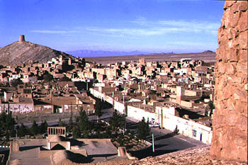 |
| 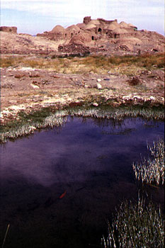 | Ashin, once a major caravan stop between central and northern Iran, now almost deserted with only two inhabitants. The goldfish in the pond seems as if it is the only remaining sign of the better times now gone by. |
| On the way to Balazoon springs, north-west to Ashin. The area seems excellent for gazelle and cheetah, but, alas, poaching has made its toll and in our two days in the area we didn't see a single gazelle, much less a cheetah. | 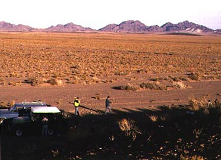 |
| 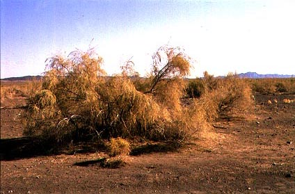 | Taagh (Tamarisk), a desert plant. It is known for the intense and long lasting heat it produces when used as fire wood. |
Local poachers use, among other weapons, these hand made shotguns. The barrel is made from two sizes of seamless pipes, one inside the other. These pipes are used in natural gas plumbing. The cartridge is a normal 12 gauge. The real poacher declined to be photographed. Here Mr. Sarbani, our host in Anarak, is showing the way to load the handmade shotgun. | 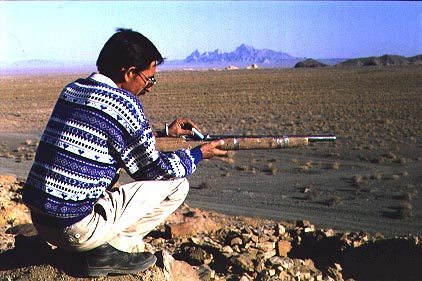 |
| 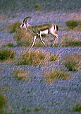 | Gazelle (Gazella subgutturosa), the oft mentioned animal in the Persian poetry could be seen in abundance in the protected area of Kalmand-Bahadoran, south-east of Yazd. In fact the number has grown too much for the inhabitants, who complain that the herds of gazelle damage their pistachio farms. A solution seems to be 'exporting' the extra numbers to other areas in which gazelle has disappeared due to poaching. |
| Mr. Shamsoddin Saleh, a game warden of the Kalmand-Bahadoran Protected area, showing the hand of a cheetah killed by poachers a year ago. In front one of Yamaha DT motorcycles recently utilized by the EPD. | 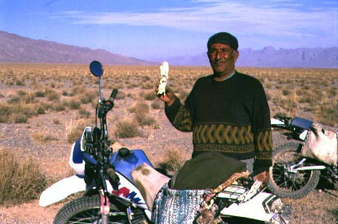 |
| 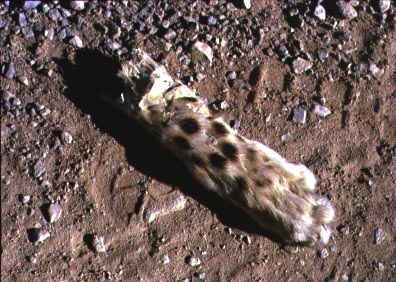 | A close-up of the cheetah hand. |
Ali Parsa and Ali Akbar of Bafq DoE, on a Yamaha DT. The picture was taken in Hasan Beygi area in which gazelle and Jebeer gazelle are abundant, and cheetah is suspected to live. | 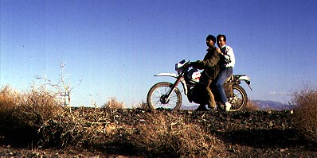 |
| 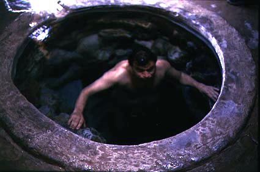 | Farrokh Mostofi taking a dip in a mineral water spring in Dareh Laghareh area. The crystal-clear water is potable and tastes like premium mineral water. It is used in a water hole nearby for gazelles, wild sheep, and ibexes. |
A Lapwing in juvenile plumage in Darreh Anjir desert, east of Yazd. | 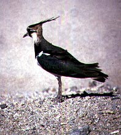 |
| 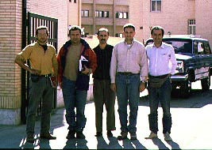 | 'The Gang' in front of Department of Environment's guesthouse in Yazd: Josep Garcia (the Barcelona Zoo), Farrokh Mostofi (editor-in-chief of Nature and Wildlife magazine), Mr. Darvish (driver), Francesc Espinal (Barcelona Conservation Organization), Ali Parsa. |
Links
Cheetah in the Iranian press
Two recent pictures
Two pictures
Sighting photos
An article in CNN about cheetah in Iran
A BBC story on cheetah
A page on Asiatic cheetah


Copyright © Ali Parsa 1998-2011
All rights reserved